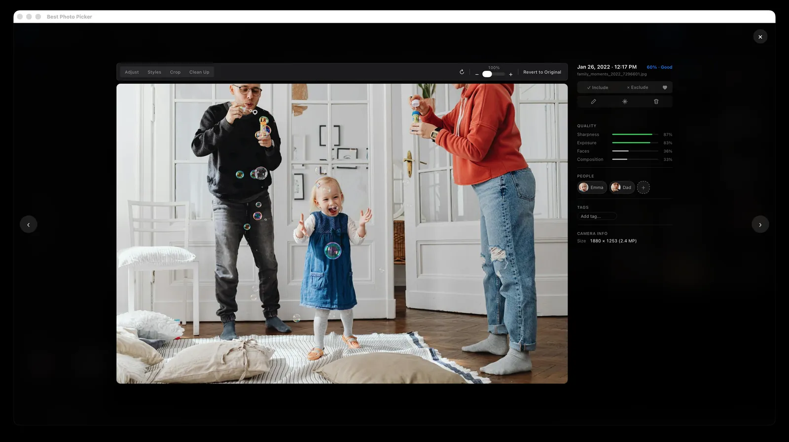
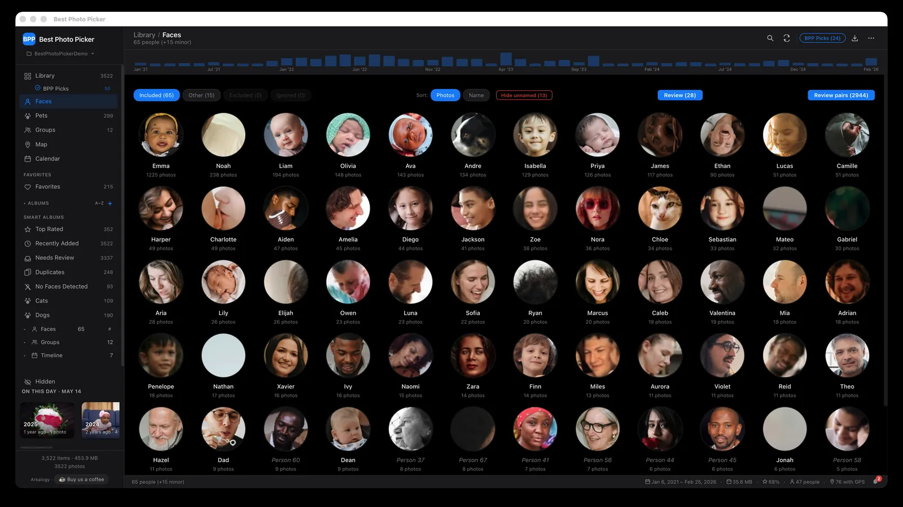
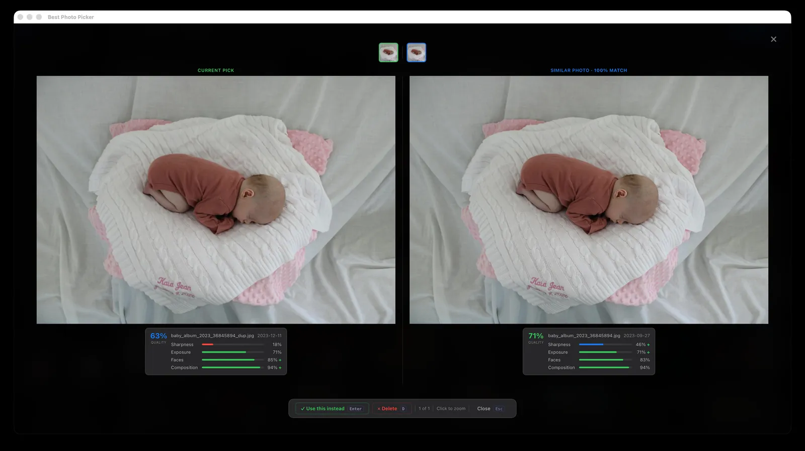

The
50 best
photos of the people you love, out of thousands.
Best Photo Picker (BPP) scores every photo for sharpness, light, faces and composition,
then hands you the best photos of the people you choose. It all runs on your computer,
so your photos are never uploaded anywhere.
336 MB app, then about 660 MB of models the first time (it asks first)
First analysis: an hour or more per 6,000 photos on an Apple Silicon Mac, longer on older machines. After that, picks update in seconds
It copies your photos into its own library, so it needs room for them
From Apple Photos or Google Photos? Export a folder first, then point it there
Shown on a sample library of stock photos (Pexels) and generated test images.
How it works
Point it at your photos
Pick any folder of phone exports, iPhone HEIC or camera RAW. It copies them into its own library, leaves your originals alone, and scores every photo offline.
Choose who matters
It recognizes faces and gathers each person’s photos in one place. Name the people you care about, or a group like “Family”, and the picks favor them.
Get the keepers
Ask for any number, 10 or 500, from the whole library or any album. You get the best of them, with near-duplicates and burst shots left out.
Scores
Every photo is scored, and you see why.
Sharpness, exposure, faces and composition, each measured and shown, so you can see why a photo rose
to the top and overrule it when your heart disagrees.
No chatbot and no cloud: sharpness and exposure are measured from the pixels, composition from where the
faces and subject sit, and faces by small on-device models that also notice closed eyes and smiles. You
can change how much each one counts.

People
Your people, not just good photos.
It recognizes the same face across all your photos and gathers each person's pictures in one place.
Name the people who matter, then ask for the best photos of just one of them, or tell it to favor a few.
It also notices who keeps showing up together and makes a group for them. Name it “Family”,
open it, and you get the best photos of the kids with mom and dad, together.

Duplicates
A burst of near-identical shots becomes one choice.
Look-alike shots are put side by side and compared on what makes a photo worth keeping: eyes open, a
smile, a face turned toward the camera, sharp focus, good light, a well-framed shot. Keep the winner and
let the rest go.

Where it fits
It doesn’t replace your photo app. It picks from it.
Apple Photos, Google Photos
Great for storing and browsing everything you shoot. BPP works alongside them and hands you the best photos of the people you choose.
Lightroom, Aftershoot, Narrative Select, Excire
Made for photographers culling one shoot at a time, mostly as paid tools. BPP goes through years of family photos at once, and it’s free.
digiKam, Immich
Powerful free tools for managing and searching a big library, on your desktop or your own server. BPP does one job: a short list of the best photos, ready to share.
Compare feature by feature
Feature
BPP
Apple Photos
Google Photos
Lightroom Classic
digiKam
Runs locally, fully offline
✓
✓
✗
mostly
✓
Ranks the whole library into a best-N set
✓
limited
limited
AI culling
basic
Leans the picks toward a named person
✓
limited
limited
✗
✗
Near-duplicate grouping
✓
✓
✓
✓
✓
Free and open source
✓MIT
✗
✗
✗
✓GPL
No account, no subscription
✓
✓built into macOS
✗
✗
✓
As of October 2026, for each tool’s mainstream desktop or consumer version. Features and terms change; check current details.
And more
Everything between “thousands” and the final set.
A photo editor built in
Crop, straighten and rotate, adjust light and color, fix red-eye or auto-enhance. A machine-learning model can remove a stray object. Your original file is never changed.
Search by describing it
Type “birthday cake” or “beach at sunset” and the matching photos come up. No tags or keywords to add first: it matches what is in the picture.
You choose the models
Face recognition, search and object removal use machine-learning models on your computer. See each one’s size and source before it downloads, and switch them in Settings.
Not fifty shots of one party
Took 200 photos at one party? You won’t get 40 of them back. Picks are spread out, by default no more than 3 from a day when it can, across the whole year.
Ready for the photo book
Export the picks to a folder for a photo book or print service, with a simple web gallery alongside so the whole family can look through them.
Smart albums that build themselves
Each person and group, every year, Top Rated, Duplicates, Screenshots and Pets (once pet detection is on) fill themselves in. Ask any of them for its best photos.
Reads what your camera makes
iPhone HEIC, camera RAW, JPEG and PNG, imported as they are. The extra files that come with Live Photos are tucked away so they don’t clutter the grid.
Look on any screen at home
Scan a code with your phone or tablet on the same Wi-Fi, approve it once on your computer, and browse there. Remove any device whenever you like.
Delete without worry
Anything you delete waits thirty days in Recently Deleted, so you can cut hard and still change your mind, then it is cleared away for you.
Not in someone else’s cloud. On your own computer.
Many photo services copy your whole library to their servers to process it. BPP does all of the work on your computer, so nothing is sent away to be analyzed, scanned, mined for data or used to train AI.
Your photos never leave your computer. Scoring, face recognition and search all run right there, never on our servers or anyone else’s.
No account, no subscription, no tracking. Nothing to sign up for, nothing to pay, and the app never reports what you do in it.
It goes online, but never with your photos. Only for models, updates and map tiles, plus a quick check of a signed model list at startup and, on Python installs, add-ons you choose to install. Each one is in the README.
Open source under the MIT license. Anyone can read the code, check these claims for themselves, or build the app from source.
Install it with Python 3.11 (HEIC and camera RAW support included), then run bpp serve to open it in your browser. Tested on Linux; Windows should work but hasn't been tested end to end.
After the same install, run it without the app window: point it at a photo folder and it links the best ones into another folder, leaving your originals where they are. The first command accepts the free-license face models once; the command line then downloads the models it needs without asking. A Dockerfile is included but untested, and there is no published image yet.
bpp model accept-attribution && bpp run --input /photos --k 50 --out ~/best --symlink
Can this site count your visit with Google Analytics? It sets cookies. The app itself never tracks you.